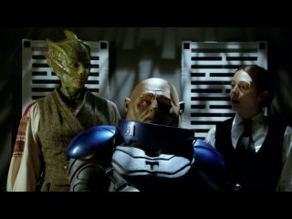
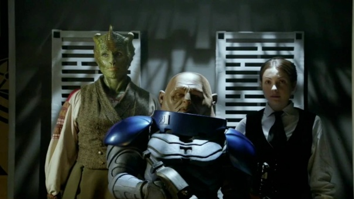

The Battle of Demons Run: Two Days Later
мини-эпизод к 7 сезону
25 марта 2013
Формат: 3-минутный эпизод
| Варианты озвучек: | * MVO ArtSound |
|---|---|
| Скачивание и просмотр: |
Сюжет рассказал о том, что произошло между сериями «Хороший человек идёт на войну» (2011) и «Снеговики» (2012), и каким именно образом Стракс решил отправиться в родное время Вастры и Дженни.
